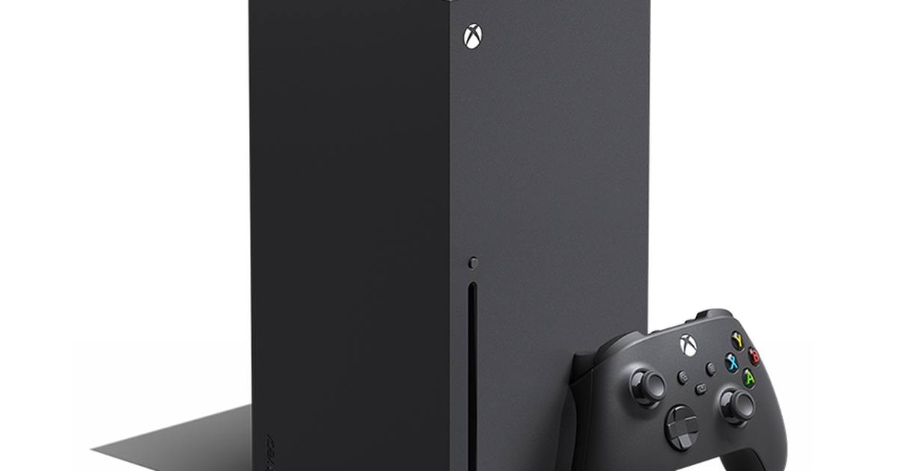

Microsoft's outage reached Xbox — sign-ins, cloud saves and Cloud Gaming all hit, and the status page still says everything is fine
A global Microsoft outage that began November 12 knocked out Outlook, Teams and Microsoft 365 — and by Friday, Xbox players were reporting failed sign-ins, games that won't launch and Cloud Gaming queues, even as Xbox's own status page showed all green.

What happened
Microsoft's global outage is on its second day, and it has spread from the office to the living room. The disruption — tracked as incident MO1550821 — began on Thursday, November 12, when the servers behind Exchange Online failed their automated health checks. Outlook, Teams, Copilot, OneDrive and SharePoint went dark for users in 74 countries, with more than 130,000 Outlook problem reports logged at the peak.
By Friday, Xbox players were feeling it too. Users reported failed sign-ins, digital games that would not launch, cloud saves that would not sync, and trouble reaching Xbox Cloud Gaming — long queues, and sessions kicking players out entirely.
The strange part
Here is the part that has players confused: the official Xbox status page lists every service as up and running, including sign-in, multiplayer, the store and cloud gaming. Xbox does not appear on Microsoft's own list of affected products, and Xbox Support has posted nothing about the outage. Microsoft has said a core process on the affected servers became overwhelmed and lost capacity, ruled out malicious activity, and says recovery is ongoing — but has given no time for a full recovery, and its own status page still shows service capacity below normal.
Why the timing stings
The outage landed on an awkward week for Xbox. Microsoft launched a free, ad-supported tier of Xbox Cloud Gaming on November 12 — the same day the outage began. And the cloud is about to matter more than ever: Grand Theft Auto VI arrives November 19, and it will be streamable on Xbox consoles via Xbox Cloud Gaming at launch, including on previous-gen Xbox One hardware. A cloud service players cannot reach is a problem; a cloud service players cannot reach six days before the biggest launch of the year is a bigger one.
What's next
Microsoft says mail is moving again and email queues are shrinking, and it extended its email timeout to 48 hours to protect delayed messages. But capacity has not returned to normal, some users still face intermittent issues, and there is still no ETA for a full fix. If your Xbox still will not sign in, check the status page first — and then check Downdetector, because the two are not telling the same story right now.
Sources
• XBOX Impacted By Global Microsoft Outage As Worldwide Tech Suffers (Insider Gaming)
• Microsoft global outage hits Xbox sign-ins, saves, and Cloud Gaming (NotebookCheck)
• Is Xbox Down? Microsoft's 16-Hour Outage Explained (TalkEsport)
• Microsoft Outage Day 2: Xbox Live Update at 10:30 AM CT (Pixel Herald)
Gear up: Razer — mice, keyboards, headsets and laptops.